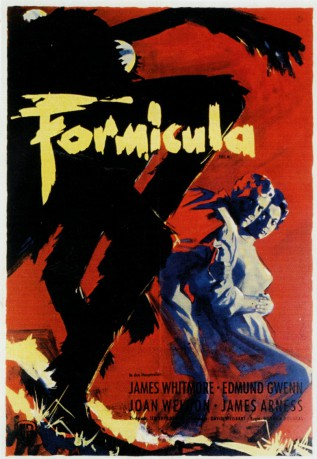
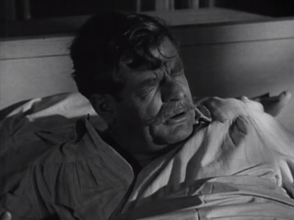
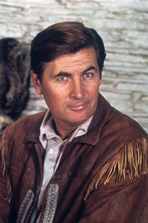
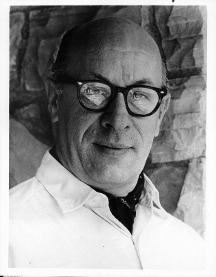
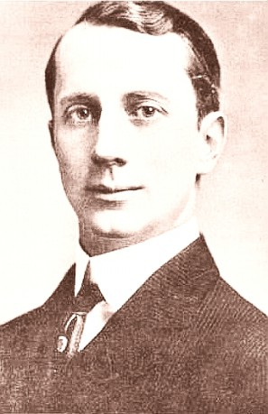
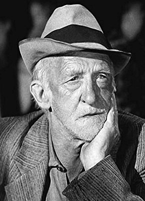
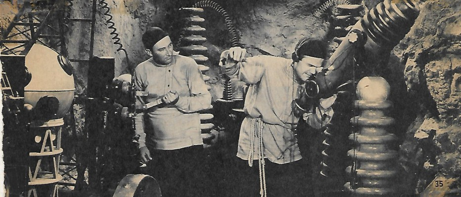
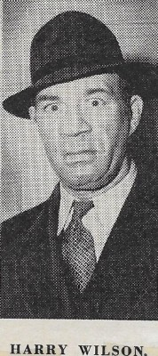

#9880 Formicula
Alternativ: Them!
Auszeichnungen: für 1 Oscars nominiert
 
 IMDB-Wertung: 7.3 / 10
IMDB-Wertung: 7.3 / 10  Metascore: 0
Metascore: 0 
In einer Wüste nahe der mexikanischen Grenze werden Atomversuche durchgeführt, bei denen durch ein Versehen riesige Ameisen entstehen, die über die Erde herfallen und die Menschen fressen. Armee und Wissenschaftler versuchen die Monster zu bekämpfen …
Jahr: 1954
Dauer: 92 Minuten
FSK: 12
Land: USA Studio: Warner Bros.Tonspuren:
Untertitel: Englisch,
Auflösung: 1080p (1920x1080) Größe: 9082 MB
Genre: Horror, Sci-Fi
Regisseur: Gordon Douglas
Drehbuch: Ted Sherdeman, Russell S. Hughes, George Worthing Yates
Soundtrack: Bronislau Kaper
Darsteller:
 James Whitmore als Police Sgt. Ben Peterson
James Whitmore als Police Sgt. Ben Peterson Edmund Gwenn als Dr. Harold Medford
Edmund Gwenn als Dr. Harold Medford- Joan Weldon als Dr. Patricia Medford
- James Arness als Robert Graham
- Onslow Stevens als Brig. Gen. Robert O'Brien
-  Sean McClory als Maj. Kibbee
- Sandy Descher als The Ellinson Girl
-  Fess Parker als Alan Crotty
 Olin Howland als Jensen
Olin Howland als Jensen- Richard Bellis als Mike Lodge (uncredited)
 John Beradino als Patrolman Ryan (uncredited)
John Beradino als Patrolman Ryan (uncredited) Willis Bouchey als Official at D.C. Meeting (uncredited)
Willis Bouchey als Official at D.C. Meeting (uncredited)- Alexander Campbell als Official (uncredited)
- James Cardwell als Officer (uncredited)
 Steve Carruthers als Reporter (uncredited)
Steve Carruthers als Reporter (uncredited) Roydon Clark als Jeep Driver (uncredited)
Roydon Clark als Jeep Driver (uncredited) Walter Coy als Reporter (uncredited)
Walter Coy als Reporter (uncredited)-  Richard Deacon als Bald Reporter (uncredited)
- Eddie Dew als Officer (uncredited)
 Lawrence Dobkin als Los Angeles City Engineer (uncredited)
Lawrence Dobkin als Los Angeles City Engineer (uncredited)- Ann Doran als Child Psychiatrist (uncredited)
- Dean Fredericks als Det. Curtis (uncredited)
- Dorothy Green als Matron (uncredited)
 Kenner G. Kemp als Trooper #2 (uncredited)
Kenner G. Kemp als Trooper #2 (uncredited) Paul Kruger als Washington Official (uncredited)
Paul Kruger als Washington Official (uncredited)-  Carl M. Leviness als Reporter (uncredited)
- Wayne Mallory als Loader (uncredited)
- John Maxwell als Dr. Grant (uncredited)
-  Mathew McCue als Gramps Johnson, Storekeeper (uncredited)
 Charles Meredith als Washington Official (uncredited)
Charles Meredith als Washington Official (uncredited)- Jan Merlin als Radio Man on the SS Viking (uncredited)
 Forbes Murray als Government Official (uncredited)
Forbes Murray als Government Official (uncredited) Leonard Nimoy als Army Sergeant (uncredited)
Leonard Nimoy als Army Sergeant (uncredited) Jack Perrin als Army Officer (uncredited)
Jack Perrin als Army Officer (uncredited)- Grandon Rhodes als Alcoholic Ward Doctor (uncredited)
 William Schallert als Ambulance Attendant (uncredited)
William Schallert als Ambulance Attendant (uncredited) Dub Taylor als Railroad Yard Watchman (uncredited)
Dub Taylor als Railroad Yard Watchman (uncredited) Harry Tyler als Harry, Alcoholic Ward Patient (uncredited)
Harry Tyler als Harry, Alcoholic Ward Patient (uncredited)-  Dick Wessel als Railroad Detective (uncredited)
-  Harry Wilson als Alcoholic Ward Patient (uncredited)
- Dick York als Teen in police station (uncredited)
- Chris Drake als Trooper Ed Blackburn
- Mary Alan Hokanson als Mrs. Lodge
- Don Shelton als Trooper Capt. Fred Edwards
- Robert Berger als Patrolman Sutton (uncredited)
- Oscar Blank als Alcoholic Ward Patient (uncredited)
- Richard Boyer als Trooper #1 (uncredited)
- Waldron Boyle als Doctor (uncredited)
- Dick Cherney als Cameraman (uncredited)
- John Close als Johnny, Police Aircraft Pilot (uncredited)
Datei: X:\1950-1959\Formicula (1954, FSK12, 1920x1080).mkv seit 08.11.2018
Festplatte: HD 1900-1970
 Es gibt insgesamt 141 Filme in der Gruppe '1950-1959'
Es gibt insgesamt 141 Filme in der Gruppe '1950-1959'